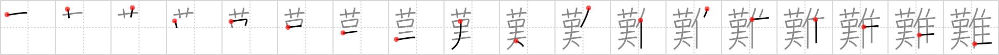

難
← →
difficult

Reading:
On-Yomi: ナン — Kun-Yomi: かた.い、-がた.い、むずか.しい、むづか.しい、むつか.しい、-にく.い
Heisig story:
Scarecrow . . . turkey.
Koohii stories:
1) [johnzep] 8-8-2007(243): It is difficult for a scarecrow to scare a turkey or else they would've been called scareturkeys.
2) [samuize] 19-4-2008(128): Learning Kanji is difficult for Turkeys.
3) [DrWarrior12] 8-7-2008(52): It is difficult to get back into the kanji learning groove again after going cold turkey for a month or so.
4) [Katsuo] 28-11-2009(12): The Scarecrow is trying to scare some turkeys, but they all just ignore him. He turns to you and says, "Scaring crows is easy, but turkeys – now that's difficult".
5) [meredithcat] 25-7-2010(8): You think it's difficult for you to learn kanji? Think about how difficult it would be for a turkey!